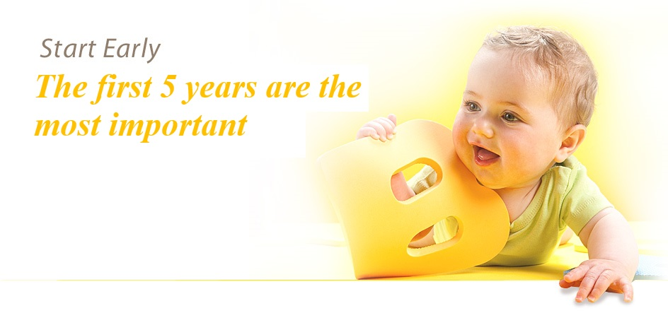

Our Program
Our Centres incorporate:
- The National Quality Framework
- The Early Years Learning Framework
- An advanced academic program
- A comprehensive School Readiness program
- Innovative indoor and outdoor programs
- Seasonal Summer and Winter menus
Our children are exposed to literacy, numeracy, physical education, art and crafts, music and movement, cooking, role-playing and many more exciting experiences. We are the winners of numerous awards in child care excellence and innovation.
Other ServicesOur Centres provide::
- Freshly prepared meals and snacks during the day including a hot lunch
- All menus are approved by a nutritionist
- Nappy changing facilities
- Birthday celebrations
- Homemade birthday cakes (nominal charge)
- Special events and celebrations for children and families
- Parent education and information sessions
- All equipment and materials